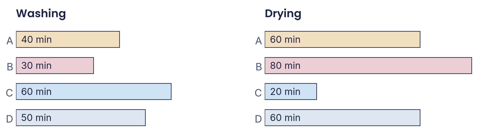
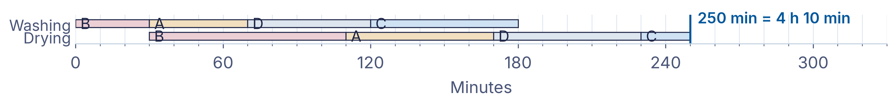
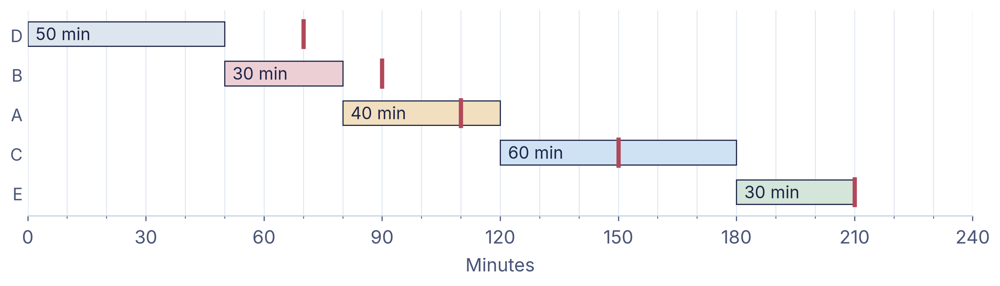
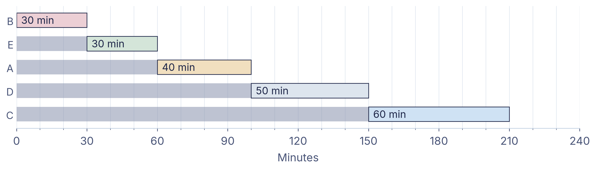
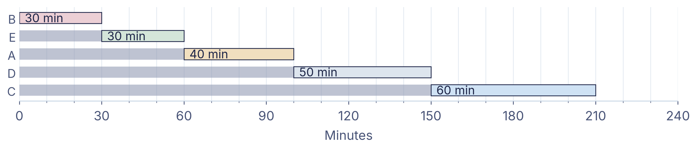
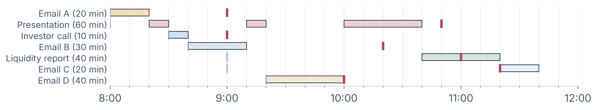

Lecture IV: Scheduling
Programming: Everyday Decision-Making Algorithms
Dr. Nils Roemer, External Lecturer
Planningio GmbH
Today in one sentence
There is no single best order for your tasks: first decide what you want to achieve, and the right rule follows.
Why it matters
Monday morning, ten tasks on your list: where do you start? Companies face the same question at scale: which order on the production line, which customer order first, which project gets the team this week.
Roadmap
- The basics: when order matters, and when it doesn’t
- Your goal decides the rule: deadlines, waiting time, value
- Real life: dependencies, interruptions and thrashing
Ten tasks, one day: where do you start?
Question: How do you decide?
- With the most urgent one
- With the quickest one
- With the most important one
Keep your answer in mind. We come back to it.
Four loads of laundry, one washer, one dryer
Every load is washed first, then dried.
Each machine handles one load at a time.
Goal: all laundry done as early as possible
Goal: Finish all four loads as early as possible
Question: In which order would you wash?
Johnson’s rule
Rule:1
- Find the shortest time in the whole table
- Is it a wash? Put that load as early as possible
- Is it a dry? Put that load as late as possible
- Cross out the load and repeat
In words: short washes go first, so the dryer can start early. Short dries go last, so little is left to do once the washer has finished.
Applying Johnson’s rule
Question: Which load do we place first, and where?
Applying Johnson’s rule
- The shortest time is C’s dry, 20 minutes
- It is a dry, so C goes last
Question: Which load is next?
Applying Johnson’s rule
- The shortest time is B’s wash, 30 minutes
- It is a wash, so B goes first
Question: Which load is next?
Applying Johnson’s rule
- The shortest time is A’s wash, 40 minutes
- It is a wash, so A goes second
Now, we only have one load left!
Applying Johnson’s rule
Final sequence: B A D C
The best order takes 4 hours 10 minutes
Best order: B A D C

How to read this chart

- One row per machine
- One bar per load
- Time runs from left to right
- It is called a Gantt chart, after Henry Gantt, who drew such charts around 1910 for factory planning.
Question: How much worse can it get?
A bad order takes one hour longer
A bad order: C D A B

Question: Why is this order worse?
The dryer waits a full hour for the first wash, and the longest dry comes at the very end.
Johnson’s rule beyond laundry
- Any work in two steps, where the second step waits for the first
- You: when cooking, start with what is quick to prepare and long in the oven
- Companies: a report goes from the analyst to the reviewer. Start with the report that is quick to write and long to review
Order the work so that the second step never stands idle.
Scheduling is everywhere
Question: Where do companies schedule?
- Projects: which task first, who works on what
- Production: which order on the line
- Hospitals: patients, surgeries, staff
- Transport: routes, crews, maintenance
- Software: which program gets the processor
What do we know about a task?
- Duration: how long does it take?
- Deadline: when is it due?
- Value: how much is it worth?
- Dependency: what must be done before?
Which of these we look at depends on our goal.
One person instead of two machines

Question: What is different from before?
One person: does the order matter?
Question: Does the order change how long we need?
With one person and no deadlines, every order takes the same total time.
Question: So the order is irrelevant?
No. Order becomes crucial with deadlines, priorities and dependencies.
Reordering your to-do list does not make it shorter. Order only matters once you say what you want.
Roadmap
- The basics: when order matters, and when it doesn’t
- Your goal decides the rule: deadlines, waiting time, value
- Real life: dependencies, interruptions and thrashing
What do you want?
- Not be late
- Wait as little as possible
- Deliver the most value
Each goal has its own rule.
Companies know this conflict: sales wants every order on time, production wants as much output as possible.
Goal 1: don’t be too late
Tasks with individual deadlines:
All times count from now: task D is due in 70 minutes.
Goal: Keep the worst delay as small as possible
Question: In which order would you work?
Earliest deadline first
Rule: Sort the tasks by deadline, earliest first.
This rule is called Earliest Due Date, or EDD.
Let’s visualize this!
The plan: earliest deadline first

Red marks: deadlines.
Question: What is the worst delay here?
30 minutes, for task C. Task A is 10 minutes late.
In the order A to E, task D would be 110 minutes late.
Earliest due date in real life
- You: work on assignments in the order they are due
- Companies: produce customer orders in the order of the promised delivery date
- Watch out: the rule ignores how long a task takes and how important it is
Goal 2: as little waiting as possible

No deadlines this time. For each task, someone is waiting.
Goal: Keep the total waiting time as small as possible
Question: Which task first?
Shortest task first
Rule: Always do the shortest remaining task next. If two are equally short, pick either.
This rule is called Shortest Processing Time, or SPT.
Question: In which order do we work?
Shortest task first
Rule: Always do the shortest remaining task next. If two are equally short, pick either.
This rule is called Shortest Processing Time, or SPT.
Final sequence: B E A D C or E B A D C
The plan: shortest task first

Question: Where can we see the waiting time?
Waiting time adds up to 340 minutes
Total waiting time: 340 minutes

Grey: time a task waits before it starts.
The other way round, longest task first: 500 minutes.
Shortest task first in real life
- You: if it takes less than two minutes, do it now
- Companies: a help desk that answers quick requests first makes the average customer wait less
- Why it works: a short task makes everyone behind it wait only a little
- Watch out: the big task keeps getting pushed back
Goal 3: deliver the most value
- Change: Tasks now have different values, e.g. revenue for a consultant
Question: Which task first?
Highest value per minute first
Rule: Highest revenue per minute first
Revenue per minute = revenue divided by duration. Task A: 240 euros / 20 minutes = 12 euros per minute.
Question: In which order do we work?
Highest value per minute first
Rule: Highest revenue per minute first
Highest value per minute first
Rule: Highest revenue per minute first
Value per minute in real life
- You: before an exam, study first what brings the most points per hour
- Companies: when machine time is scarce, produce the order that earns the most per machine hour
You may know this from cost accounting: contribution margin per unit of the bottleneck.
No money involved? Rate the importance from 1 to 10 instead.
Roadmap
- The basics: when order matters, and when it doesn’t
- Your goal decides the rule: deadlines, waiting time, value
- Real life: dependencies, interruptions and thrashing
A spacecraft that kept restarting
- In July 1997, NASA’s Pathfinder landed on Mars
- Then its computer started to restart again and again
- The cause: an important task was waiting for an unimportant one1
Question: How can that happen?
Priority inversion: an important task waits for an unimportant one

How do we prevent this?
Question: What should happen with task A?
Rule: A task takes over the priority of the task that waits for it
B now starts after 20 minutes instead of 110
This is called priority inheritance. It is how NASA fixed Pathfinder, from Earth.
Priority inheritance in real life
- You: shopping has the priority of the dinner it is for
- Companies: a 5 euro spare part that stops a machine has the priority of the machine
A task is as important as what waits for it.
With dependencies, there is often no quick recipe
- For deadlines, waiting time and value, sorting is enough
- Add dependencies, and for many goals nobody knows a fast way to find the best plan
- In practice: good rules of thumb, or software that searches for a good plan
A good plan now beats a perfect plan too late.
Interruptions: new tasks arrive while you work
- In reality we cannot predict the future
- New tasks arrive while we work
- We look at it with our first goal: don’t be too late
A morning with seven tasks
It is 8:00. These tasks arrive during the morning:
Question: How would you start, if the goal is to avoid being late?
In real time: switch only for an earlier deadline
Rule:
- Always work on the task with the earliest deadline
- A new task with an earlier deadline interrupts the current one
- Otherwise, stick to the current task
This works for any goal: switch only if the new task beats the current one.
The morning, planned in real time

Grey line: arrival, red mark: deadline.
Question: What is the worst delay with this plan?
20 minutes, for the liquidity report and Email C.
No plan does better here: there is simply more work than time.
Every switch costs
- Every time you switch tasks, you clear your desk for three books and set it up again
- The switch itself produces nothing
- Switch often enough, and switching is all you do
Thrashing: switching so much that nothing gets done
- You switch tasks all the time
- Nothing gets finished
- Stress goes up, quality goes down
Question: Have you ever experienced this?
Bundle your interruptions
- You: check email and messages at set times, not as they arrive
- Companies: one weekly approval round instead of requests at any time
- How fast must you respond? It is rarely “immediately”
- Too much on the list? Say no or hand over
Which rule when?
| Situation | Rule |
|---|---|
| Work in two steps | Johnson: quick first step early, quick second step late |
| Deadlines count | Earliest due date first |
| People are waiting | Shortest task first |
| Tasks differ in value | Highest value per minute first |
| One task blocks another | The blocker gets the priority of what waits for it |
| New tasks keep arriving | Switch only for a better task, bundle the rest |
Urgent, quick or important? It depends on your goal.
What we covered
The basics: when order matters, and when it doesn’t
Sometimes the order of tasks changes the result, sometimes it doesn’t. Knowing which saves time.
Your goal decides the rule: deadlines, waiting time, value
Each goal has its own simple rule: earliest deadline first to avoid being late, shortest task first to cut waiting, highest value per minute first to maximize what you deliver.
Real life: dependencies, interruptions and thrashing
Dependencies make planning harder, and constant switching eats up your time. Protect blocks of focused work.
Why it matters
Monday morning, ten tasks on your list: where do you start? Companies face the same question at scale: which order on the production line, which customer order first, which project gets the team this week.
First choose your goal.
Then choose your order.
Any questions
so far?
After the break: dictionaries and DataFrames
- Programming session in our new notebooks
- Today’s rules in code: dictionaries and DataFrames
- Different scheduling algorithms applied to problems
Literature
Interesting literature to start
- Christian, B., & Griffiths, T. (2016). Algorithms to live by: the computer science of human decisions. First international edition. New York, Henry Holt and Company.1
Books on Programming
- Downey, A. B. (2024). Think Python: How to think like a computer scientist (Third edition). O’Reilly. Free online
- Elter, S. (2021). Schrödinger programmiert Python: Das etwas andere Fachbuch (1. Auflage). Rheinwerk Verlag.
Think Python is free online and a great start. Schrödinger programmiert Python is a playful alternative in German.
More Literature
For more interesting literature, take a look at the literature list of this course.
Lecture IV: Scheduling | Dr. Nils Roemer | Home